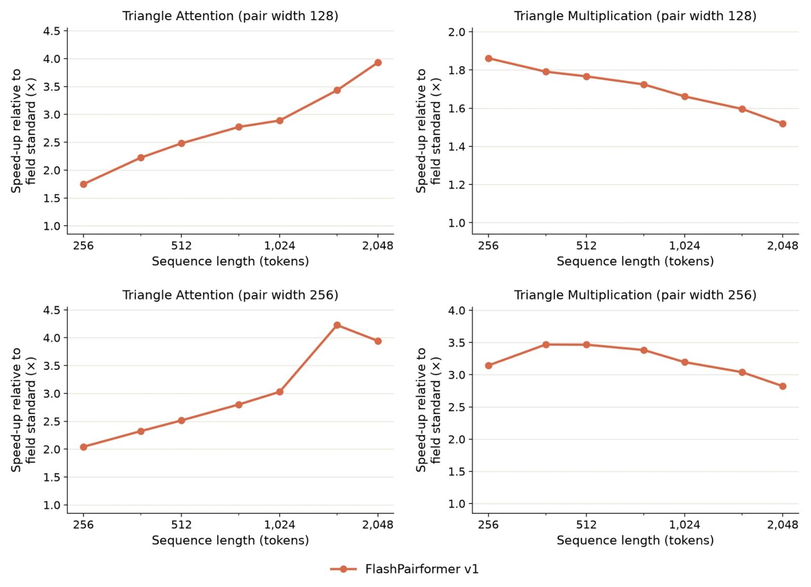
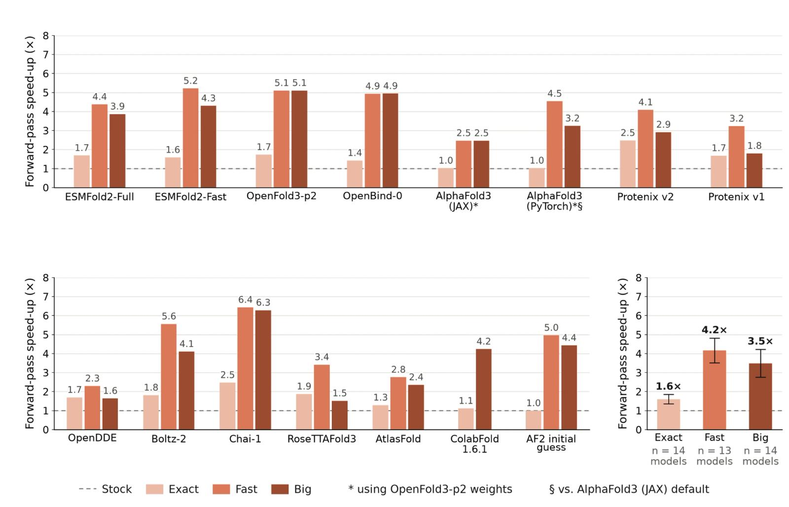
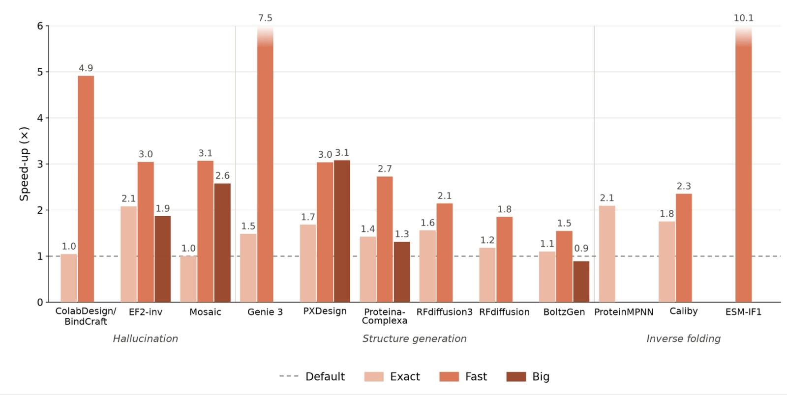
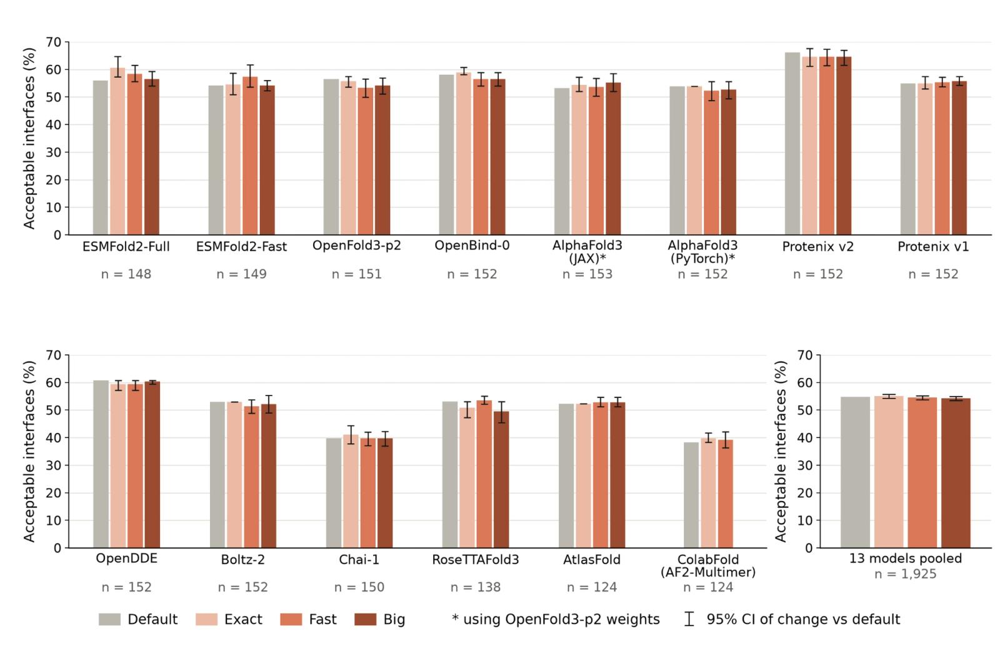
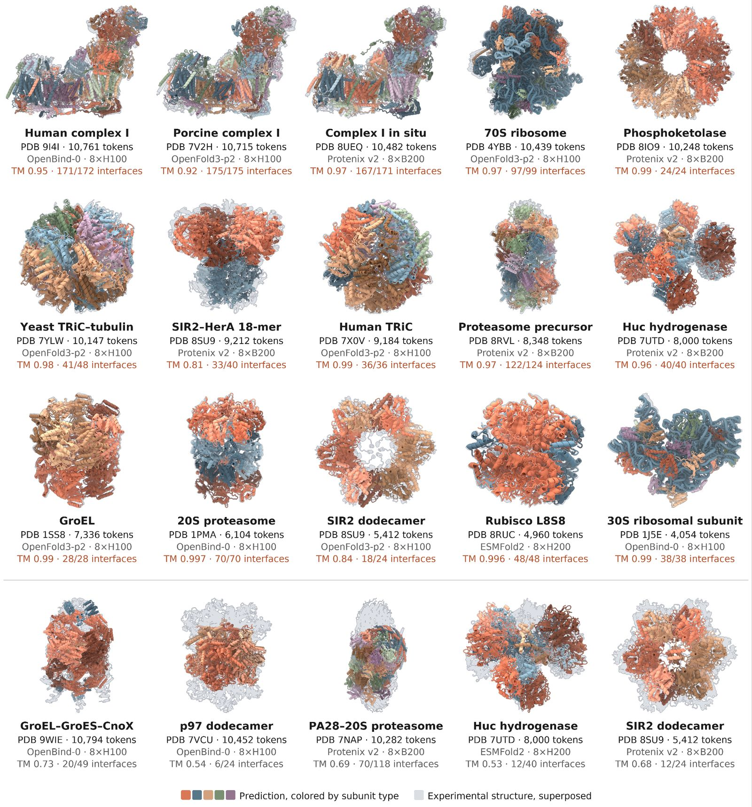
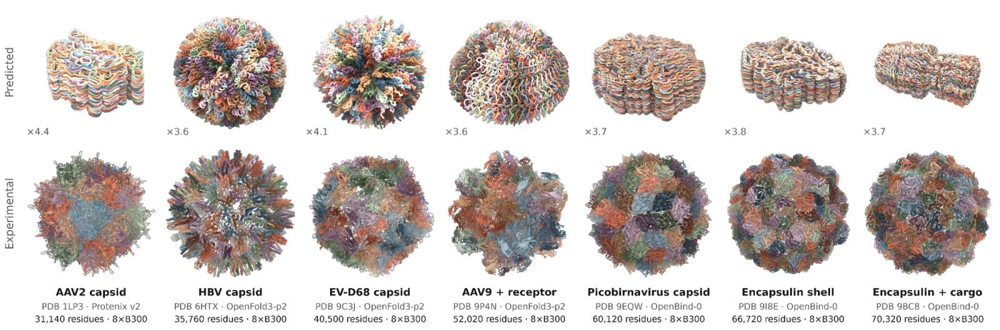
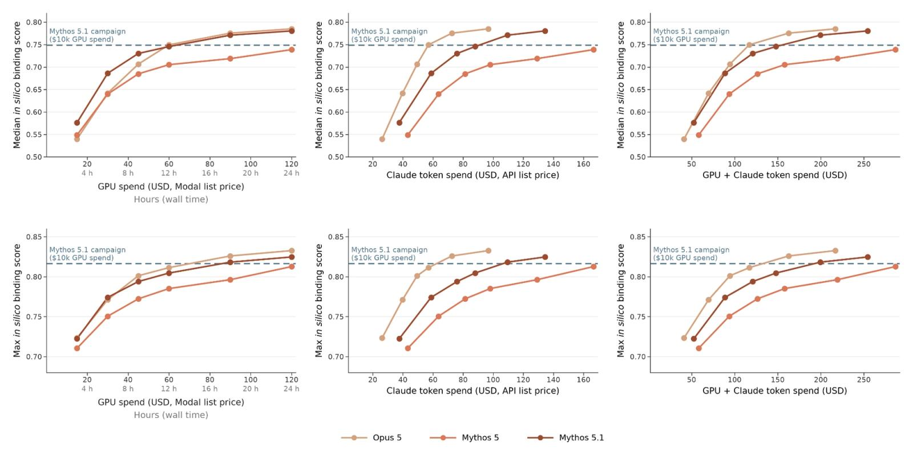

In this post, we share how Claude made the open-source models that scientists use to predict and design biomolecules faster and more memory-efficient. Claude optimized more than 30 of these models in just under four weeks, speeding them up roughly 4x on average. It also created a low-memory mode that enables the accurate prediction of biomolecular systems larger than 10,000 tokens (amino acids, nucleotides, and atoms from small molecules and ions) on a single NVIDIA GPU node. We are open-sourcing all of the optimized code and announcing a protein design competition co-sponsored with Adaptyv Bio, backed by up to $1 million in Claude credits and wet lab validation for over 5,000 designs. Recently, we shared results demonstrating Claude’s abilities to design de novo protein binders through expert-level orchestration of open-source protein design and structure prediction models. De novo binders are small, computationally designed proteins that attach tightly to a specific target molecule to activate, block, or deliver something to it.
Although this was an encouraging demonstration of AI’s scientific capabilities and an early step towards advancing drug discovery, it took more resources than would be available to the vast majority of protein designers. We allowed Claude to spend up to $10,000 per target on the AI infrastructure platform Modal, roughly equivalent to 2,500 NVIDIA H100 GPU hours.
To make such research more accessible, we began to explore inference optimizations to run these models more efficiently. As an early result of these optimizations, Claude Mythos 5.1 accelerated seven open-source biology models, enabling them to run up to 2.5 times faster.
Here, we present new results showing how an internal, general-purpose research model was able to optimize more than 30 deep learning models trained for a variety of biological tasks, such as structure prediction and protein design, as well as for genomics and protein language models. On average, Claude was able to speed up such tasks roughly 4x while sacrificing a minimal amount of precision, and nearly 2x with identical outputs. Claude also improved the memory utilization of these models, making it possible to predict biomolecular systems of unprecedented sizes. By combining these results with simplifications to our previous agentic protein design approach, we show that Claude can achieve comparable in silico performance to the results we previously reported using two orders of magnitude fewer GPU hours.
Beyond protein design, these specialized biological models are widely used by molecular biologists, including for drug discovery and development. We are open-sourcing the optimized code for all of these models today (here) so that the broader community can make use of them. You can find more detail in our technical report (here).
To further support the community, we are also co-sponsoring a protein design competition with Adaptyv Bio, which has pioneered open protein design competitions. We’ve jointly selected five challenging problems at the frontier of today’s capabilities. Together with Adaptyv, and thanks to generous contributions from Modal and Twist Bioscience, we’re committing up to $1 million in Claude credits and $250,000 in Modal compute credits, as well as wet lab validation for over 5,000 designs. Find more information (here) and (apply here).
Accelerating protein structure prediction and design models
Protein structure prediction is the problem of determining the three-dimensional structure of a protein from its sequence of amino acids alone. Protein design, meanwhile, is the process of creating a protein with a specific structure, function, or set of properties. Together, these computational tools allow scientists to interrogate key biomolecular processes, such as how cancers form, and to create useful molecules, such as drugs that could target these cancers.
Modern structure prediction models, such as AlphaFold3, OpenFold3, and Boltz-2, spend much of their computational runtime and memory on two operations: triangle attention and triangle multiplication, which act on triplets of tokens. These operations make it possible to model the geometry of biomolecular systems, but they are extremely computationally expensive, because they are cubic in both runtime and memory: doubling the size of the system uses 8x more time and memory, while tripling it uses 27x more.
Writing kernels—low-level software translation layers for accelerated computing hardware such as GPUs—is a standard approach for reducing these costs. Given their significance, triangle attention and multiplication have been the subject of dedicated kernel development efforts, first with NVIDIA’s cuEquivariance and more recently with NVIDIA’s BioNeMo Inference Runtime (BioNeMo-IR).
For our own effort to optimize inference for structure prediction models, we worked with Claude to develop FlashPairformer, a set of custom kernels that speed up triangle attention and multiplication. It achieves a new state-of-the-art, outperforming the field standard on average by 2.7-2.9x on triangle attention and 1.7-3.2x on triangle multiplication, depending on the model configuration.

In addition to developing transferable kernels, we pointed Claude at each individual model with the goal of producing more specific optimizations. These included changes like caching redundant recomputed work and simplifying dead branches into their constant outputs. The combination of these improvements accelerated the structure prediction models by 4x, on average, and for each model, we confirmed that Claude’s accelerated versions did not impact performance on the downstream task (such as structure prediction).
It normally takes an experienced team of engineers weeks to produce such optimizations for each model, and the work often does not transfer between models. Claude, supervised by two members of Anthropic’s technical staff who are experienced in biomolecular modeling but who had no prior experience in inference optimization or kernel engineering, carried out the acceleration of more than 30 open-source models across biomolecular structure prediction, protein design, protein language modeling, and genomics in just under four weeks. Our results suggest that frontier AI models will help others in the field build scientific tools with greater speed and ease.



Enabling modeling of massive biomolecular systems
In addition to making these protein structure prediction and design models faster, we also tasked Claude with reducing the memory usage involved in modeling large molecular machines. Much of the work in a cell is done by such systems, including the ribosome that builds proteins, the respiratory complexes that power the cell, and the chaperones that help other proteins fold. Each is built from dozens of components, and its function depends on how those components fit together and interact. Predicting the structures of systems this large has typically required substantial computing resources inaccessible to most molecular biologists, such as inference spread across multiple GPU nodes.
Claude created a low-memory “Big” mode that enables the accurate modeling of systems larger than 10,000 tokens and successful inference on systems larger than 70,000 tokens using just one NVIDIA GPU node—a previously out-of-reach task. Molecular machines folded successfully using Big mode include human mitochondrial complex I, the TRiC chaperone complex, a proteasome, and a bacterial ribosome, each closely matching its experimentally determined structure. To our knowledge, these are among the largest structures ever folded accurately using structure prediction models, with complex I and the 70S ribosome consisting of more than 10,000 tokens each, in comparison to the 40S ribosome predicted accurately by AlphaFold3, which consisted of 7,663 tokens.

To test the limits of Claude’s optimizations, we asked Claude to predict structures of a greater size than anything that had previously been achieved. Using a single 8-GPU B300 node, Claude generated predictions of entire viral capsids and protein compartments ranging in size from more than 31,000 to more than 70,000 tokens. These systems are nearly two orders of magnitude larger than the training context of these structure prediction models, and, perhaps unsurprisingly, are not predicted correctly. However, the barrier to inferencing at this scale has been significantly lowered now that it takes just one NVIDIA B300 node, suggesting that with improved tools researchers will soon be able to computationally model an increasingly complex set of biological systems.

Claude efficiently designs de novo protein binders
In our earlier work on protein design, we provided Claude with an approximately 16,000-word prompt that encouraged it to utilize sub-agents and spend up to $10,000 per target on Modal (roughly 2,500 NVIDIA H100 GPU hours) in a 24-hour span. Here, we gave a single Claude model access to one NVIDIA H200 and 24 hours of wall time, a prompt of about 1,100 words, and a reference sheet for the pre-installed tools, with no sub-agents and no human steering the designs.
We ran three Claude models (Mythos 5.1, Mythos 5, and Opus 5) against 16 targets with the accelerated biomolecular models described in this post. We scored designs by ipSAE, an in silico score that has been shown to be predictive of binding in the wet lab. Averaged over 16 targets, the median-scoring and highest-scoring designs from all three Claude models evaluated achieve approximately the same ipSAE values as our earlier Mythos 5.1 campaigns despite using about two orders of magnitude fewer GPU hours. We also considered Claude token costs and found that with a combined spend of approximately $150 on GPUs and tokens, we can achieve in silico performance matching the levels of our previous campaigns.

Co-sponsoring a protein design competition with Adaptyv Bio
The optimizations described above help us predict and design molecules more efficiently, while unlocking capabilities that would have otherwise been resource-prohibitive. To demonstrate the uplift they provide and the impact of Claude on molecule design more broadly, we’re partnering with Adaptyv Bio to launch a protein design competition. We’ve selected five problems at the frontier of today’s protein design capabilities, including challenges such as species cross-reactivity, pH-sensitivity, and peptide-MHC specificity, as well as difficult targets such as GPCRs.
With the Adaptyv team, we’ll be experimentally validating over 5,000 designs submitted by the community against these problems. We will be providing up to $1 million in Claude credits and additional funds for experimental validation at Adaptyv for participating researchers, Modal will provide up to $250,000 in compute credits, and Twist Bioscience will provide DNA for the competition. You can find more information, including eligibility criteria (here) and (apply here).
We have also begun to provide frontier AI capabilities to life scientists for biology-related work via our Life Sciences Verification Program. We recently enrolled our first group of organizations, and opened up the program in public beta today. You can find more information (here).
Further reading
The following resources provide further technical depth and more detailed information about the results described above: